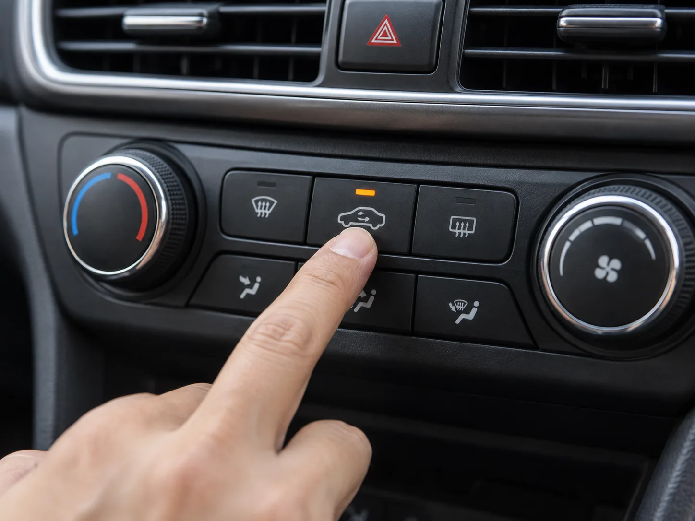
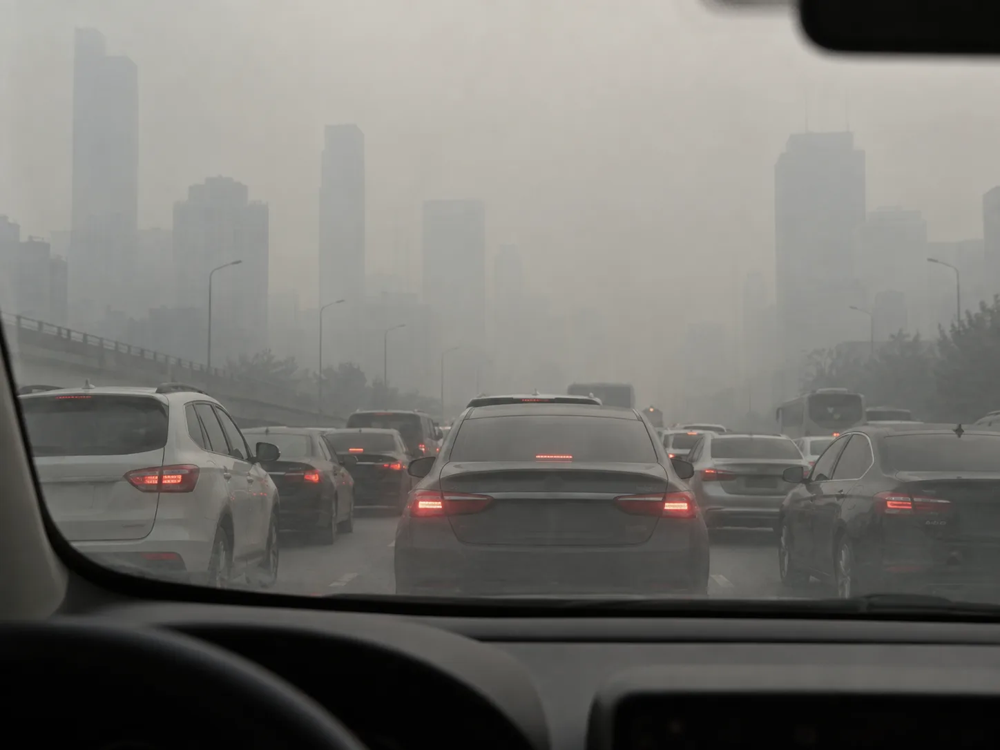
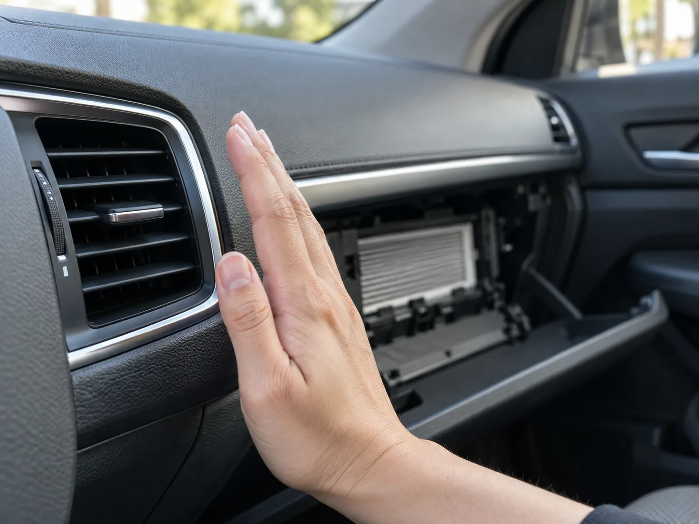

▲ 미세먼지가 심한 구간에서는 내기순환 버튼 하나가 필터 교체 못지않게 중요하다 ⓒ CarPrism (AI 생성 이미지)
미세먼지 특보가 뜨면 대부분의 운전자는 창문부터 닫는다. 그런데 창문을 닫고 밀폐한 차 안이 정말 바깥보다 안전한 공간일까.
영국 환경단체의 실측 실험에서는 정체 구간에서 차량 실내 오염물질 농도가 도로변보다 9~12배까지 높게 측정된 사례가 보고됐다. 일산화탄소는 최대 3배, 벤젠은 최대 2.5배 높았다. 앞차 배기가스가 밀폐된 뒤차 실내로 곧바로 흡입되고, 정차 중인 자기 차량의 배기가스마저 실내로 스며들기 때문으로 추정된다. 밀폐가 곧 안전을 뜻하지 않는다는 것이 이 글의 출발점이다.
1. 왜 차 안이 밖보다 더 나쁠 수 있나 — 밀폐 공간의 역설

▲ 정체 구간에서는 밀폐된 차량 실내가 오히려 오염물질이 농축되는 공간이 될 수 있다 ⓒ CarPrism (AI 생성 이미지)
일반적으로 사람들은 "차 안은 밀폐돼 있으니 바깥 공기보다 깨끗할 것"이라고 생각한다. 하지만 실측 데이터는 다른 이야기를 한다. 영국 환경단체와 언론이 진행한 차량 내 대기오염 실험에서, 혼잡한 도로를 달릴 때 차량 실내의 일부 오염물질·독성 화합물 수준이 도로변보다 9~12배 높게 측정됐다. 일산화탄소는 최고 3배, 벤젠은 최고 2.5배 높았다.
📍 원인은 '내 앞차'와 '내 차 자신'
이 현상의 원인은 두 가지로 추정된다. 첫째, 앞차가 내뿜는 배기가스가 밀폐된 뒤차 실내로 직접 흡입되는 구조다. 정체 구간에서는 차간 거리가 좁고 배기구 높이도 낮아, 뒤차 흡기구가 앞차 배기가스를 그대로 빨아들이기 쉽다. 둘째, 정차 중인 차량 자체의 배기가스가 실내로 유입되는 경우다. 신호 대기 중 공회전을 하는 차량 옆에 서 있어도 같은 문제가 생길 수 있다. 체증이 심할 때 차 안에 있는 것이 밖에 서 있는 것보다 오염 노출이 더 크고, 천식 등 호흡기 질환 위험이 높아질 수 있다는 지적도 나온다.
즉 창문을 닫는 것만으로는 부족하다. 언제 창문을 닫고, 언제 순환 모드를 바꾸느냐가 실질적인 노출량을 좌우한다.
2. 외기순환 vs 내기순환 — 언제 무엇을 눌러야 하나
공조 패널의 순환 모드 버튼(차 모양 아이콘)은 외부 공기를 들일지, 실내 공기만 돌릴지를 정하는 스위치다. 원리는 단순하지만 상황별로 정반대의 선택이 필요하다는 점이 헷갈리는 지점이다.
| 상황 | 권장 모드 | 이유 |
|---|---|---|
| 미세먼지·초미세먼지 특보 발효 시 | 내기순환 | 외부 오염 공기 유입 차단 |
| 터널 진입·정체 구간·앞차 매연 | 내기순환 | 배기가스 실내 유입 최소화 |
| 지하주차장 진입로 | 내기순환 | 밀폐 공간 배기가스 차단 |
| 김서림 발생 시 | 외기순환 | 건조한 외부 공기로 습도 낮춰 결로 해소 |
| 평상시 주행(오염 특이사항 없음) | 외기순환 | 이산화탄소 정체 방지, 신선한 공기 유지 |
| 졸음·탁한 실내 공기 느껴질 때 | 외기순환 | 이산화탄소 농도 저하, 각성 효과 |
✅ 내기순환, 이렇게만 쓰면 된다
· 냉난방 효율을 높이려면 초반 5~10분만 내기순환, 이후 외기순환으로 전환
· 미세먼지가 심한 날이라도 15~20분 간격으로 짧게 외기순환해 환기
· 내기순환을 장시간 유지하면 이산화탄소 농도가 급격히 올라가 졸음운전 위험이 커지고, 습기가 빠지지 못해 김서림도 심해짐
· 터널·지하주차장을 통과할 때만 일시적으로 전환하고, 빠져나오면 원래 모드로 되돌리는 습관이 안전함
정리하면 원칙은 간단하다. 외부 공기가 나쁠 때만 일시적으로 내기순환을 쓰고, 그 외에는 외기순환을 기본값으로 둔다. 내기순환을 "미세먼지 차단 모드"로만 여기고 상시 켜두면 이산화탄소·김서림이라는 새로운 문제가 생긴다.
3. 차량용 공기청정기, 어디까지 기대할 수 있나

▲ 실내 공기질을 좌우하는 것은 결국 송풍구 너머의 캐빈 필터다 ⓒ CarPrism (AI 생성 이미지)
컵홀더나 시거잭에 꽂는 차량용 공기청정기는 미세먼지 시즌마다 판매량이 늘어나는 품목이다. 다만 카프리즘이 별도로 다룬 차량용 공기청정기·가습기 리뷰 기사에서 확인했듯, 2019년 정부 공동조사에서 일부 모델의 실제 미세먼지 제거 성능은 표시치의 4~5%에 그쳤다. 소형 공기청정기의 정화 용량은 밀폐된 캐빈 전체 공기를 순환시키기엔 근본적으로 한계가 있다.
📍 공기청정기는 '보조', 순환 모드와 필터가 '본체'
차량 실내 공기질을 실질적으로 좌우하는 것은 결국 ① 외기·내기 순환 모드를 상황에 맞게 전환하는 습관과 ② 정상 작동하는 캐빈 필터 두 가지다. 공기청정기는 이 두 요소가 갖춰진 다음, 냄새 완화나 좁은 범위의 보조 정화 수단으로 곁들이는 정도로 기대치를 낮추는 것이 현실적이다. 캐빈 필터 자체의 교체 주기·점검법은 카프리즘의 캐빈필터 교체 가이드에서 별도로 확인할 수 있다. 캐빈필터 교체 가이드 보기
공기청정기를 고르더라도 등급 표기보다 실측 데이터를 공개하는 제품인지가 중요하다는 점, 그리고 밀폐 공간에서 가습기를 함께 쓰면 김서림·세균 번식 위험이 커질 수 있다는 점은 앞선 기사에서 자세히 다뤘다. 차량용 공기청정기·가습기 스펙 비교 보기
4. 미세먼지 등급별 대응 요령
▲ 출발 전 미세먼지 등급을 확인하는 습관이 순환 모드 전환 타이밍을 정해준다 ⓒ CarPrism (AI 생성 이미지)
환경부는 초미세먼지(PM2.5) 농도를 기준으로 좋음·보통·나쁨·매우나쁨 4단계로 예보를 발표한다. 하루 4회(오전 5시·11시, 오후 5시·11시) 전국 권역별 예보가 에어코리아를 통해 제공된다.
| 등급 | PM2.5 농도(㎍/㎥) | 차량 실내 대응 |
|---|---|---|
| 좋음 | 0~15 | 평소대로 외기순환, 자연 환기 자유롭게 |
| 보통 | 16~35 | 외기순환 기본, 정체·터널 구간만 일시 내기순환 |
| 나쁨 | 36~75 | 주행 중 내기순환 위주, 15~20분마다 짧게 외기 환기 |
| 매우나쁨 | 76 이상 | 내기순환 유지, 정차 중 환기 최소화·캐빈 필터 상태 우선 점검 |
✅ 등급별 체크리스트
· 출발 전 에어코리아·기상 앱으로 오늘 등급 확인 — 등급에 따라 순환 모드 전략을 미리 정해두면 운전 중 헷갈리지 않음
· 나쁨 이상인 날은 주차 후 잠깐이라도 창문을 열어 환기하는 습관은 피하고, 승하차 시간을 최대한 줄임
· 매우나쁨인 날은 캐빈 필터가 오래됐다면 미세먼지 시즌 전 미리 교체해두는 것이 순환 모드 전환보다 근본적인 대응임
· 임산부·영유아·호흡기질환자가 동승하는 경우, 등급이 나쁨 이상이면 불필요한 외출·주행 자체를 줄이는 것이 우선
5. 통근길 실전 루틴 — 타이밍표로 정리
지금까지의 내용을 하나의 흐름으로 엮으면, 미세먼지 시즌 통근길에 적용할 수 있는 루틴이 된다.
| 구간 | 모드 | 비고 |
|---|---|---|
| 시동 직후 승차(주차장·차고) | 내기순환 | 지하주차장 매연 차단 |
| 일반 도로 정속 주행 | 외기순환 | 이산화탄소 정체 방지 |
| 정체·신호 대기 밀집 구간 | 내기순환 | 앞차 배기가스 유입 차단 |
| 터널 통과 중 | 내기순환 | 터널 내 매연 고농도 구간 |
| 터널 통과 직후 | 외기순환 | 다시 정속 주행 모드로 복귀 |
| 내기순환 20분 경과 시점 | 외기순환 전환 | 김서림·졸음 예방 환기 |
이 루틴은 미세먼지 등급이 나쁨 이상인 날일수록 더 엄격하게 지킬 필요가 있다. 반대로 좋음·보통 등급인 날은 외기순환을 기본값으로 두고, 특정 구간(터널·정체)에서만 예외적으로 내기순환을 쓰는 정도로 충분하다.
6. 요약
차량 실내는 밀폐돼 있다는 이유만으로 안전한 공간이 아니다. 정체 구간에서는 앞차 배기가스가 실내로 그대로 흡입돼 오히려 도로변보다 오염물질 농도가 높아질 수 있다. 이를 막는 가장 즉각적인 수단은 값비싼 장비가 아니라 외기순환·내기순환 버튼을 상황에 맞게 전환하는 습관이다.
미세먼지·터널·정체 구간에서는 내기순환, 평상시와 김서림 발생 시에는 외기순환이 기본 원칙이다. 내기순환을 오래 켜두면 이산화탄소 농도 상승과 김서림이라는 부작용이 생기므로 15~20분마다 짧게 환기해야 한다. 차량용 공기청정기는 이 습관과 정상 작동하는 캐빈 필터를 보완하는 수단일 뿐, 그 자체로 실내 공기질을 책임지지는 못한다.
출발 전 미세먼지 등급을 확인하고, 등급에 맞는 순환 모드 전략을 미리 정해두는 것이 매번 판단을 새로 하는 것보다 훨씬 간단하고 확실한 관리법이다.